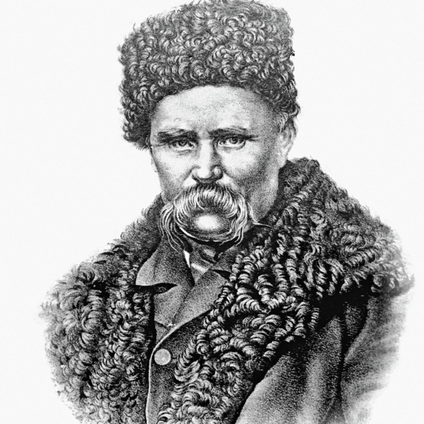
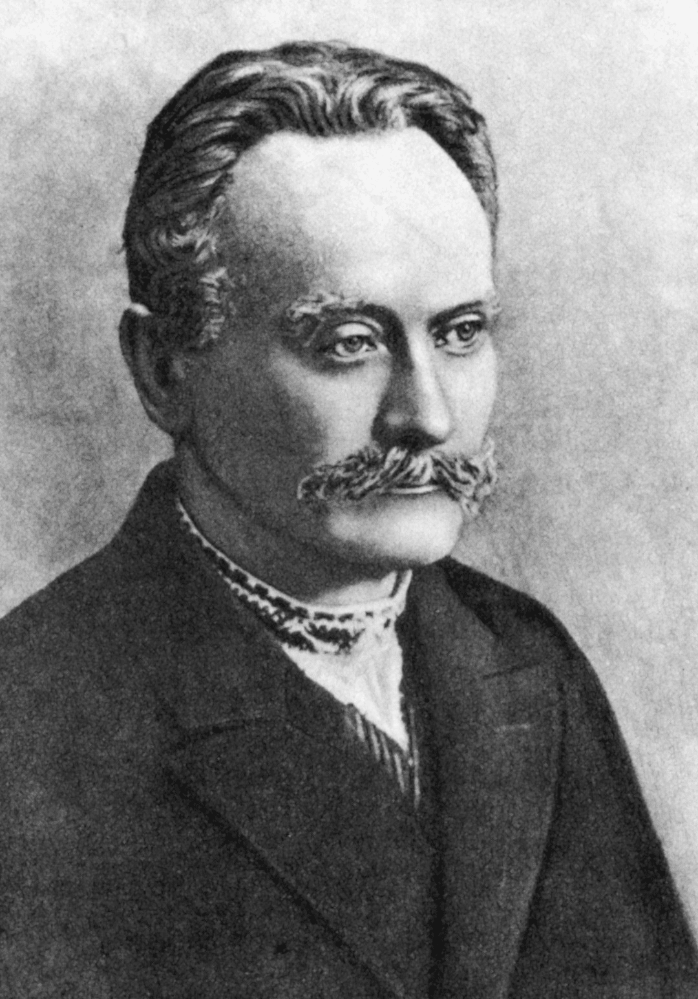
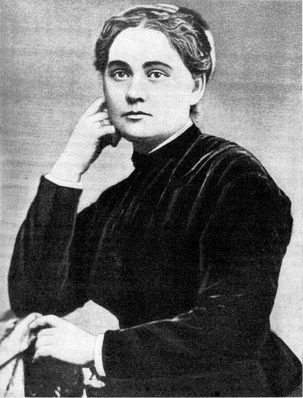

Логіка мови —
шлях до правди.
Логіка мови структурує думки, ведучи до правдивих висновків. Застосовуючи логіку в міркуваннях, ти неминуче доходиш до істини.



Українську мову знають 40 000 000 + людей у світі
Цікаві факти про українську мову
Лексичне багатство української — це не прикраса, а несуча конструкція: саме воно дозволяє мові гнутися, не ламаючись, тягнути за собою найскладнішу думку крізь умови, причини й наслідки.
Словник сучасної літературної мови налічує понад 256 000 слів
Коли майже половина словника — це іменники, мова говорить сама за себе: українська не просто описує дійсність — вона її каталогізує, класифікує й зберігає, як бібліотека, що пережила століття і не втратила жодної полиці.
Мелодійність
У 1934 році на Міжнародному конкурсі мов у Парижі українська посіла третє місце за красою і мелодійністю після французької та перської (фарсі).
Запозичення
Близько 10–15% сучасної лексики — запозичення, переважно з латини, грецької, польської та тюркських мов. Слово майдан — тюркського походження і означає «площа».
Вік і походження
Українська мова почала формуватися ще в XI–XIII століттях на основі давньоруської, але як окрема мова остаточно склалася до XIV–XV століть — тобто їй понад 600 років.
Цифрова епоха
Після 2022 року кількість запитів у Google українською мовою зросла в рази — навіть серед тих, хто раніше спілкувався переважно іншими мовами.
Готові розпочати?
Ласкаво просимо до нашої платформи! Досліджуйте словники, логічні зв'язки та аналітичні матеріали української мови.
Безкоштовно для персонального використання.